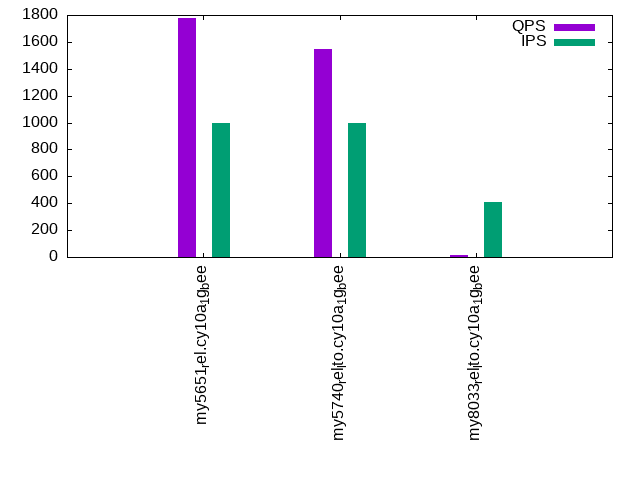

This is a report for the insert benchmark with 20M docs and 1 client(s). It is generated by scripts (bash, awk, sed) and Tufte might not be impressed. An overview of the insert benchmark is here and a short update is here. Below, by DBMS, I mean DBMS+version.config. An example is my8020.c10b40 where my means MySQL, 8020 is version 8.0.20 and c10b40 is the name for the configuration file.
The test server has 8 AMD cores, 16G RAM and an NVMe SSD. It is described here as the Beelink. The benchmark was run with 1 client and there were 1 or 3 connections per client (1 for queries or inserts without rate limits, 1+1 for rate limited inserts+deletes). There is 1 table. It loads 20M rows without secondary indexes, creates secondary indexes, then inserts 50M rows with a delete per insert to avoid growing the table. It then does 3 read+write tests for 3600s each that do queries as fast as possible with 100, 500 and then 1000 inserts/second/client concurrent with the queries and 1000 deletes/second to avoid growing the table. The database is cached by the OS but not by InnoDB.
The tested DBMS are:
The numbers are inserts/s for l.i0 and l.i1, indexed docs (or rows) /s for l.x and queries/s for q100, q500, q1000. The values are the average rate over the entire test for inserts (IPS) and queries (QPS). The range of values for IPS and QPS is split into 3 parts: bottom 25%, middle 50%, top 25%. Values in the bottom 25% have a red background, values in the top 25% have a green background and values in the middle have no color. A gray background is used for values that can be ignored because the DBMS did not sustain the target insert rate. Red backgrounds are not used when the minimum value is within 80% of the max value.
| dbms | l.i0 | l.x | l.i1 | q100.1 | q500.1 | q1000.1 |
|---|---|---|---|---|---|---|
| my5651_rel.cy10a_1g_bee | 94340 | 39105 | 940 | 3400 | 2596 | 1778 |
| my5740_rel_lto.cy10a_1g_bee | 76046 | 133112 | 2954 | 877 | 2066 | 1550 |
| my8033_rel_lto.cy10a_1g_bee | 56338 | 34477 | 590 | 25 | 16 | 15 |
This table has relative throughput, throughput for the DBMS relative to the DBMS in the first line, using the absolute throughput from the previous table. Values less than 0.95 have a yellow background. Values greater than 1.05 have a blue background.
| dbms | l.i0 | l.x | l.i1 | q100.1 | q500.1 | q1000.1 |
|---|---|---|---|---|---|---|
| my5651_rel.cy10a_1g_bee | 1.00 | 1.00 | 1.00 | 1.00 | 1.00 | 1.00 |
| my5740_rel_lto.cy10a_1g_bee | 0.81 | 3.40 | 3.14 | 0.26 | 0.80 | 0.87 |
| my8033_rel_lto.cy10a_1g_bee | 0.60 | 0.88 | 0.63 | 0.01 | 0.01 | 0.01 |
This lists the average rate of inserts/s for the tests that do inserts concurrent with queries. For such tests the query rate is listed in the table above. The read+write tests are setup so that the insert rate should match the target rate every second. Cells that are not at least 95% of the target have a red background to indicate a failure to satisfy the target.
| dbms | q100.1 | q500.1 | q1000.1 |
|---|---|---|---|
| my5651_rel.cy10a_1g_bee | 100 | 499 | 998 |
| my5740_rel_lto.cy10a_1g_bee | 99 | 499 | 999 |
| my8033_rel_lto.cy10a_1g_bee | 88 | 388 | 410 |
| target | 100 | 500 | 1000 |
l.i0: load without secondary indexes. Graphs for performance per 1-second interval are here.
Average throughput:
Insert response time histogram: each cell has the percentage of responses that take <= the time in the header and max is the max response time in seconds. For the max column values in the top 25% of the range have a red background and in the bottom 25% of the range have a green background. The red background is not used when the min value is within 80% of the max value.
| dbms | 256us | 1ms | 4ms | 16ms | 64ms | 256ms | 1s | 4s | 16s | gt | max |
|---|---|---|---|---|---|---|---|---|---|---|---|
| my5651_rel.cy10a_1g_bee | 86.671 | 12.687 | 0.615 | 0.024 | 0.003 | 0.099 | |||||
| my5740_rel_lto.cy10a_1g_bee | 3.331 | 94.900 | 1.619 | 0.148 | 0.001 | 0.081 | |||||
| my8033_rel_lto.cy10a_1g_bee | 99.365 | 0.464 | 0.161 | 0.010 | 0.111 |
Performance metrics for the DBMS listed above. Some are normalized by throughput, others are not. Legend for results is here.
ips qps rps rmbps wps wmbps rpq rkbpq wpi wkbpi csps cpups cspq cpupq dbgb1 dbgb2 rss maxop p50 p99 tag 94340 0 826 3.2 72.5 26.3 0.009 0.035 0.001 0.286 10798 20.8 0.114 18 1.3 41.8 1.0 0.099 97886 58534 20m.my5651_rel.cy10a_1g_bee 76046 0 0 0.0 104.9 21.5 0.000 0.000 0.001 0.290 7801 20.1 0.103 21 1.3 41.8 1.1 0.081 75912 58023 20m.my5740_rel_lto.cy10a_1g_bee 56338 0 0 0.0 255.2 19.7 0.000 0.000 0.005 0.358 7418 20.5 0.132 29 1.3 9.9 1.4 0.111 57090 42151 20m.my8033_rel_lto.cy10a_1g_bee
l.x: create secondary indexes.
Average throughput:
Performance metrics for the DBMS listed above. Some are normalized by throughput, others are not. Legend for results is here.
ips qps rps rmbps wps wmbps rpq rkbpq wpi wkbpi csps cpups cspq cpupq dbgb1 dbgb2 rss maxop p50 p99 tag 39105 0 26 0.1 347.2 40.3 0.001 0.003 0.009 1.055 2135 5.2 0.055 11 2.7 43.2 1.1 0.022 NA NA 20m.my5651_rel.cy10a_1g_bee 133112 0 0 0.0 331.1 118.6 0.000 0.000 0.002 0.913 5512 11.4 0.041 7 3.0 43.5 1.3 0.013 NA NA 20m.my5740_rel_lto.cy10a_1g_bee 34477 0 170 11.1 733.5 36.9 0.005 0.329 0.021 1.096 5166 11.2 0.150 26 3.0 11.5 1.5 0.014 NA NA 20m.my8033_rel_lto.cy10a_1g_bee
l.i1: continue load after secondary indexes created. Graphs for performance per 1-second interval are here.
Average throughput:
Insert response time histogram: each cell has the percentage of responses that take <= the time in the header and max is the max response time in seconds. For the max column values in the top 25% of the range have a red background and in the bottom 25% of the range have a green background. The red background is not used when the min value is within 80% of the max value.
| dbms | 256us | 1ms | 4ms | 16ms | 64ms | 256ms | 1s | 4s | 16s | gt | max |
|---|---|---|---|---|---|---|---|---|---|---|---|
| my5651_rel.cy10a_1g_bee | 2.024 | 43.311 | 37.486 | 11.652 | 5.507 | 0.021 | 1.779 | ||||
| my5740_rel_lto.cy10a_1g_bee | 5.871 | 62.870 | 28.940 | 2.100 | 0.217 | 0.002 | 1.382 | ||||
| my8033_rel_lto.cy10a_1g_bee | 0.074 | 29.645 | 28.159 | 37.724 | 3.804 | 0.593 | 0.003 | 4.803 |
Delete response time histogram: each cell has the percentage of responses that take <= the time in the header and max is the max response time in seconds. For the max column values in the top 25% of the range have a red background and in the bottom 25% of the range have a green background. The red background is not used when the min value is within 80% of the max value.
| dbms | 256us | 1ms | 4ms | 16ms | 64ms | 256ms | 1s | 4s | 16s | gt | max |
|---|---|---|---|---|---|---|---|---|---|---|---|
| my5651_rel.cy10a_1g_bee | 26.877 | 36.300 | 28.474 | 7.909 | 0.438 | 0.003 | 1.781 | ||||
| my5740_rel_lto.cy10a_1g_bee | 11.511 | 62.262 | 25.017 | 1.209 | 0.001 | 0.310 | |||||
| my8033_rel_lto.cy10a_1g_bee | 1.065 | 31.434 | 29.359 | 35.991 | 2.089 | 0.061 | 0.001 | 4.058 |
Performance metrics for the DBMS listed above. Some are normalized by throughput, others are not. Legend for results is here.
ips qps rps rmbps wps wmbps rpq rkbpq wpi wkbpi csps cpups cspq cpupq dbgb1 dbgb2 rss maxop p50 p99 tag 940 0 34 0.2 3094.8 93.4 0.036 0.207 3.292 101.751 8165 7.1 8.684 604 3.8 44.3 1.1 1.779 450 50 20m.my5651_rel.cy10a_1g_bee 2954 0 3 0.2 4669.8 149.3 0.001 0.058 1.581 51.760 13149 18.8 4.451 509 4.7 45.4 1.3 1.382 2997 300 20m.my5740_rel_lto.cy10a_1g_bee 590 0 0 0.0 918.7 16.9 0.001 0.066 1.556 29.263 5704 5.4 9.663 732 5.1 14.3 1.5 4.803 450 0 20m.my8033_rel_lto.cy10a_1g_bee
q100.1: range queries with 100 insert/s per client. Graphs for performance per 1-second interval are here.
Average throughput:
Query response time histogram: each cell has the percentage of responses that take <= the time in the header and max is the max response time in seconds. For max values in the top 25% of the range have a red background and in the bottom 25% of the range have a green background. The red background is not used when the min value is within 80% of the max value.
| dbms | 256us | 1ms | 4ms | 16ms | 64ms | 256ms | 1s | 4s | 16s | gt | max |
|---|---|---|---|---|---|---|---|---|---|---|---|
| my5651_rel.cy10a_1g_bee | 58.201 | 41.238 | 0.200 | 0.352 | 0.007 | nonzero | 0.234 | ||||
| my5740_rel_lto.cy10a_1g_bee | 21.504 | 75.497 | 0.151 | 1.572 | 0.968 | 0.306 | 0.003 | 0.388 | |||
| my8033_rel_lto.cy10a_1g_bee | 0.006 | 34.616 | 3.227 | 18.861 | 28.651 | 12.659 | 1.937 | 0.042 | 2.518 |
Insert response time histogram: each cell has the percentage of responses that take <= the time in the header and max is the max response time in seconds. For max values in the top 25% of the range have a red background and in the bottom 25% of the range have a green background. The red background is not used when the min value is within 80% of the max value.
| dbms | 256us | 1ms | 4ms | 16ms | 64ms | 256ms | 1s | 4s | 16s | gt | max |
|---|---|---|---|---|---|---|---|---|---|---|---|
| my5651_rel.cy10a_1g_bee | 15.792 | 69.569 | 14.458 | 0.097 | 0.083 | 0.792 | |||||
| my5740_rel_lto.cy10a_1g_bee | 13.958 | 31.417 | 19.903 | 24.931 | 9.694 | 0.097 | 1.316 | ||||
| my8033_rel_lto.cy10a_1g_bee | 2.222 | 4.375 | 10.000 | 64.403 | 18.972 | 0.028 | 2.551 |
Delete response time histogram: each cell has the percentage of responses that take <= the time in the header and max is the max response time in seconds. For max values in the top 25% of the range have a red background and in the bottom 25% of the range have a green background. The red background is not used when the min value is within 80% of the max value.
| dbms | 256us | 1ms | 4ms | 16ms | 64ms | 256ms | 1s | 4s | 16s | gt | max |
|---|---|---|---|---|---|---|---|---|---|---|---|
| my5651_rel.cy10a_1g_bee | 47.431 | 42.694 | 9.722 | 0.111 | 0.042 | 0.497 | |||||
| my5740_rel_lto.cy10a_1g_bee | 43.958 | 20.347 | 25.903 | 9.694 | 0.097 | 0.550 | |||||
| my8033_rel_lto.cy10a_1g_bee | 5.556 | 2.306 | 10.986 | 64.042 | 17.028 | 0.083 | 2.619 |
Performance metrics for the DBMS listed above. Some are normalized by throughput, others are not. Legend for results is here.
ips qps rps rmbps wps wmbps rpq rkbpq wpi wkbpi csps cpups cspq cpupq dbgb1 dbgb2 rss maxop p50 p99 tag 100 3400 5 0.0 772.1 22.8 0.002 0.010 7.736 233.746 14912 12.4 4.385 292 3.8 44.3 1.1 0.234 3421 2703 20m.my5651_rel.cy10a_1g_bee 99 877 1 0.0 2885.8 82.3 0.001 0.022 29.150 850.843 11871 8.5 13.538 775 4.7 45.4 1.3 0.388 367 32 20m.my5740_rel_lto.cy10a_1g_bee 88 25 1 0.0 660.8 11.1 0.054 1.005 7.475 128.018 4299 2.7 170.592 8572 5.1 14.3 1.5 2.518 16 0 20m.my8033_rel_lto.cy10a_1g_bee
q500.1: range queries with 500 insert/s per client. Graphs for performance per 1-second interval are here.
Average throughput:
Query response time histogram: each cell has the percentage of responses that take <= the time in the header and max is the max response time in seconds. For max values in the top 25% of the range have a red background and in the bottom 25% of the range have a green background. The red background is not used when the min value is within 80% of the max value.
| dbms | 256us | 1ms | 4ms | 16ms | 64ms | 256ms | 1s | 4s | 16s | gt | max |
|---|---|---|---|---|---|---|---|---|---|---|---|
| my5651_rel.cy10a_1g_bee | 48.694 | 49.925 | 0.097 | 1.266 | 0.018 | 0.045 | |||||
| my5740_rel_lto.cy10a_1g_bee | 22.930 | 75.466 | 0.051 | 1.479 | 0.068 | 0.007 | 0.200 | ||||
| my8033_rel_lto.cy10a_1g_bee | 0.001 | 22.632 | 7.258 | 13.805 | 29.035 | 22.631 | 4.598 | 0.040 | 2.395 |
Insert response time histogram: each cell has the percentage of responses that take <= the time in the header and max is the max response time in seconds. For max values in the top 25% of the range have a red background and in the bottom 25% of the range have a green background. The red background is not used when the min value is within 80% of the max value.
| dbms | 256us | 1ms | 4ms | 16ms | 64ms | 256ms | 1s | 4s | 16s | gt | max |
|---|---|---|---|---|---|---|---|---|---|---|---|
| my5651_rel.cy10a_1g_bee | 12.756 | 73.131 | 14.111 | 0.003 | 0.065 | ||||||
| my5740_rel_lto.cy10a_1g_bee | 47.978 | 46.603 | 4.514 | 0.889 | 0.017 | 0.336 | |||||
| my8033_rel_lto.cy10a_1g_bee | 0.392 | 21.858 | 16.689 | 53.014 | 7.950 | 0.097 | 2.856 |
Delete response time histogram: each cell has the percentage of responses that take <= the time in the header and max is the max response time in seconds. For max values in the top 25% of the range have a red background and in the bottom 25% of the range have a green background. The red background is not used when the min value is within 80% of the max value.
| dbms | 256us | 1ms | 4ms | 16ms | 64ms | 256ms | 1s | 4s | 16s | gt | max |
|---|---|---|---|---|---|---|---|---|---|---|---|
| my5651_rel.cy10a_1g_bee | 54.956 | 36.006 | 9.039 | 0.053 | |||||||
| my5740_rel_lto.cy10a_1g_bee | 80.275 | 16.475 | 3.153 | 0.097 | 0.115 | ||||||
| my8033_rel_lto.cy10a_1g_bee | 5.442 | 18.081 | 17.069 | 52.228 | 7.072 | 0.108 | 3.072 |
Performance metrics for the DBMS listed above. Some are normalized by throughput, others are not. Legend for results is here.
ips qps rps rmbps wps wmbps rpq rkbpq wpi wkbpi csps cpups cspq cpupq dbgb1 dbgb2 rss maxop p50 p99 tag 499 2596 22 0.1 3018.6 91.0 0.008 0.055 6.052 186.891 16590 13.5 6.392 416 3.8 44.3 1.1 0.045 2605 1822 20m.my5651_rel.cy10a_1g_bee 499 2066 5 0.1 2896.2 86.7 0.003 0.043 5.803 177.975 15494 13.5 7.499 523 4.7 45.4 1.3 0.200 2157 863 20m.my5740_rel_lto.cy10a_1g_bee 388 16 2 0.0 672.0 11.4 0.111 2.177 1.734 30.202 4424 3.8 283.615 19487 5.2 14.5 1.5 2.395 16 0 20m.my8033_rel_lto.cy10a_1g_bee
q1000.1: range queries with 1000 insert/s per client. Graphs for performance per 1-second interval are here.
Average throughput:
Query response time histogram: each cell has the percentage of responses that take <= the time in the header and max is the max response time in seconds. For max values in the top 25% of the range have a red background and in the bottom 25% of the range have a green background. The red background is not used when the min value is within 80% of the max value.
| dbms | 256us | 1ms | 4ms | 16ms | 64ms | 256ms | 1s | 4s | 16s | gt | max |
|---|---|---|---|---|---|---|---|---|---|---|---|
| my5651_rel.cy10a_1g_bee | 31.162 | 65.610 | 0.404 | 2.761 | 0.058 | 0.005 | 0.249 | ||||
| my5740_rel_lto.cy10a_1g_bee | 15.736 | 81.280 | 0.207 | 2.620 | 0.138 | 0.019 | 0.226 | ||||
| my8033_rel_lto.cy10a_1g_bee | 0.003 | 20.046 | 7.788 | 13.028 | 29.171 | 24.712 | 5.181 | 0.071 | 3.719 |
Insert response time histogram: each cell has the percentage of responses that take <= the time in the header and max is the max response time in seconds. For max values in the top 25% of the range have a red background and in the bottom 25% of the range have a green background. The red background is not used when the min value is within 80% of the max value.
| dbms | 256us | 1ms | 4ms | 16ms | 64ms | 256ms | 1s | 4s | 16s | gt | max |
|---|---|---|---|---|---|---|---|---|---|---|---|
| my5651_rel.cy10a_1g_bee | 19.529 | 66.161 | 13.858 | 0.425 | 0.026 | 0.403 | |||||
| my5740_rel_lto.cy10a_1g_bee | 36.514 | 55.122 | 7.300 | 1.038 | 0.026 | 0.496 | |||||
| my8033_rel_lto.cy10a_1g_bee | 0.031 | 21.950 | 15.515 | 53.490 | 8.922 | 0.092 | 3.483 |
Delete response time histogram: each cell has the percentage of responses that take <= the time in the header and max is the max response time in seconds. For max values in the top 25% of the range have a red background and in the bottom 25% of the range have a green background. The red background is not used when the min value is within 80% of the max value.
| dbms | 256us | 1ms | 4ms | 16ms | 64ms | 256ms | 1s | 4s | 16s | gt | max |
|---|---|---|---|---|---|---|---|---|---|---|---|
| my5651_rel.cy10a_1g_bee | 59.237 | 31.407 | 9.238 | 0.118 | 0.186 | ||||||
| my5740_rel_lto.cy10a_1g_bee | 70.511 | 23.989 | 5.385 | 0.115 | 0.172 | ||||||
| my8033_rel_lto.cy10a_1g_bee | 2.165 | 22.851 | 16.139 | 51.244 | 7.494 | 0.106 | 3.452 |
Performance metrics for the DBMS listed above. Some are normalized by throughput, others are not. Legend for results is here.
ips qps rps rmbps wps wmbps rpq rkbpq wpi wkbpi csps cpups cspq cpupq dbgb1 dbgb2 rss maxop p50 p99 tag 998 1778 45 0.3 4781.7 145.1 0.025 0.179 4.791 148.913 17033 14.4 9.579 648 3.8 44.3 1.1 0.249 1822 304 20m.my5651_rel.cy10a_1g_bee 999 1550 9 0.1 4503.3 135.8 0.006 0.089 4.510 139.250 17476 15.4 11.276 795 4.7 45.4 1.3 0.226 1598 352 20m.my5740_rel_lto.cy10a_1g_bee 410 15 2 0.0 671.1 11.5 0.127 2.566 1.636 28.770 4451 4.0 302.760 21769 5.4 15.0 1.5 3.719 16 0 20m.my8033_rel_lto.cy10a_1g_bee
l.i0: load without secondary indexes
Performance metrics for all DBMS, not just the ones listed above. Some are normalized by throughput, others are not. Legend for results is here.
ips qps rps rmbps wps wmbps rpq rkbpq wpi wkbpi csps cpups cspq cpupq dbgb1 dbgb2 rss maxop p50 p99 tag 94340 0 826 3.2 72.5 26.3 0.009 0.035 0.001 0.286 10798 20.8 0.114 18 1.3 41.8 1.0 0.099 97886 58534 20m.my5651_rel.cy10a_1g_bee 76046 0 0 0.0 104.9 21.5 0.000 0.000 0.001 0.290 7801 20.1 0.103 21 1.3 41.8 1.1 0.081 75912 58023 20m.my5740_rel_lto.cy10a_1g_bee 56338 0 0 0.0 255.2 19.7 0.000 0.000 0.005 0.358 7418 20.5 0.132 29 1.3 9.9 1.4 0.111 57090 42151 20m.my8033_rel_lto.cy10a_1g_bee
l.x: create secondary indexes
Performance metrics for all DBMS, not just the ones listed above. Some are normalized by throughput, others are not. Legend for results is here.
ips qps rps rmbps wps wmbps rpq rkbpq wpi wkbpi csps cpups cspq cpupq dbgb1 dbgb2 rss maxop p50 p99 tag 39105 0 26 0.1 347.2 40.3 0.001 0.003 0.009 1.055 2135 5.2 0.055 11 2.7 43.2 1.1 0.022 NA NA 20m.my5651_rel.cy10a_1g_bee 133112 0 0 0.0 331.1 118.6 0.000 0.000 0.002 0.913 5512 11.4 0.041 7 3.0 43.5 1.3 0.013 NA NA 20m.my5740_rel_lto.cy10a_1g_bee 34477 0 170 11.1 733.5 36.9 0.005 0.329 0.021 1.096 5166 11.2 0.150 26 3.0 11.5 1.5 0.014 NA NA 20m.my8033_rel_lto.cy10a_1g_bee
l.i1: continue load after secondary indexes created
Performance metrics for all DBMS, not just the ones listed above. Some are normalized by throughput, others are not. Legend for results is here.
ips qps rps rmbps wps wmbps rpq rkbpq wpi wkbpi csps cpups cspq cpupq dbgb1 dbgb2 rss maxop p50 p99 tag 940 0 34 0.2 3094.8 93.4 0.036 0.207 3.292 101.751 8165 7.1 8.684 604 3.8 44.3 1.1 1.779 450 50 20m.my5651_rel.cy10a_1g_bee 2954 0 3 0.2 4669.8 149.3 0.001 0.058 1.581 51.760 13149 18.8 4.451 509 4.7 45.4 1.3 1.382 2997 300 20m.my5740_rel_lto.cy10a_1g_bee 590 0 0 0.0 918.7 16.9 0.001 0.066 1.556 29.263 5704 5.4 9.663 732 5.1 14.3 1.5 4.803 450 0 20m.my8033_rel_lto.cy10a_1g_bee
q100.1: range queries with 100 insert/s per client
Performance metrics for all DBMS, not just the ones listed above. Some are normalized by throughput, others are not. Legend for results is here.
ips qps rps rmbps wps wmbps rpq rkbpq wpi wkbpi csps cpups cspq cpupq dbgb1 dbgb2 rss maxop p50 p99 tag 100 3400 5 0.0 772.1 22.8 0.002 0.010 7.736 233.746 14912 12.4 4.385 292 3.8 44.3 1.1 0.234 3421 2703 20m.my5651_rel.cy10a_1g_bee 99 877 1 0.0 2885.8 82.3 0.001 0.022 29.150 850.843 11871 8.5 13.538 775 4.7 45.4 1.3 0.388 367 32 20m.my5740_rel_lto.cy10a_1g_bee 88 25 1 0.0 660.8 11.1 0.054 1.005 7.475 128.018 4299 2.7 170.592 8572 5.1 14.3 1.5 2.518 16 0 20m.my8033_rel_lto.cy10a_1g_bee
q500.1: range queries with 500 insert/s per client
Performance metrics for all DBMS, not just the ones listed above. Some are normalized by throughput, others are not. Legend for results is here.
ips qps rps rmbps wps wmbps rpq rkbpq wpi wkbpi csps cpups cspq cpupq dbgb1 dbgb2 rss maxop p50 p99 tag 499 2596 22 0.1 3018.6 91.0 0.008 0.055 6.052 186.891 16590 13.5 6.392 416 3.8 44.3 1.1 0.045 2605 1822 20m.my5651_rel.cy10a_1g_bee 499 2066 5 0.1 2896.2 86.7 0.003 0.043 5.803 177.975 15494 13.5 7.499 523 4.7 45.4 1.3 0.200 2157 863 20m.my5740_rel_lto.cy10a_1g_bee 388 16 2 0.0 672.0 11.4 0.111 2.177 1.734 30.202 4424 3.8 283.615 19487 5.2 14.5 1.5 2.395 16 0 20m.my8033_rel_lto.cy10a_1g_bee
q1000.1: range queries with 1000 insert/s per client
Performance metrics for all DBMS, not just the ones listed above. Some are normalized by throughput, others are not. Legend for results is here.
ips qps rps rmbps wps wmbps rpq rkbpq wpi wkbpi csps cpups cspq cpupq dbgb1 dbgb2 rss maxop p50 p99 tag 998 1778 45 0.3 4781.7 145.1 0.025 0.179 4.791 148.913 17033 14.4 9.579 648 3.8 44.3 1.1 0.249 1822 304 20m.my5651_rel.cy10a_1g_bee 999 1550 9 0.1 4503.3 135.8 0.006 0.089 4.510 139.250 17476 15.4 11.276 795 4.7 45.4 1.3 0.226 1598 352 20m.my5740_rel_lto.cy10a_1g_bee 410 15 2 0.0 671.1 11.5 0.127 2.566 1.636 28.770 4451 4.0 302.760 21769 5.4 15.0 1.5 3.719 16 0 20m.my8033_rel_lto.cy10a_1g_bee
Insert response time histogram
256us 1ms 4ms 16ms 64ms 256ms 1s 4s 16s gt max tag 0.000 86.671 12.687 0.615 0.024 0.003 0.000 0.000 0.000 0.000 0.099 my5651_rel.cy10a_1g_bee 0.000 3.331 94.900 1.619 0.148 0.001 0.000 0.000 0.000 0.000 0.081 my5740_rel_lto.cy10a_1g_bee 0.000 0.000 99.365 0.464 0.161 0.010 0.000 0.000 0.000 0.000 0.111 my8033_rel_lto.cy10a_1g_bee
TODO - determine whether there is data for create index response time
Insert response time histogram
256us 1ms 4ms 16ms 64ms 256ms 1s 4s 16s gt max tag 0.000 0.000 2.024 43.311 37.486 11.652 5.507 0.021 0.000 0.000 1.779 my5651_rel.cy10a_1g_bee 0.000 0.000 5.871 62.870 28.940 2.100 0.217 0.002 0.000 0.000 1.382 my5740_rel_lto.cy10a_1g_bee 0.000 0.000 0.074 29.645 28.159 37.724 3.804 0.593 0.003 0.000 4.803 my8033_rel_lto.cy10a_1g_bee
Delete response time histogram
256us 1ms 4ms 16ms 64ms 256ms 1s 4s 16s gt max tag 0.000 0.000 26.877 36.300 28.474 7.909 0.438 0.003 0.000 0.000 1.781 my5651_rel.cy10a_1g_bee 0.000 0.000 11.511 62.262 25.017 1.209 0.001 0.000 0.000 0.000 0.310 my5740_rel_lto.cy10a_1g_bee 0.000 0.000 1.065 31.434 29.359 35.991 2.089 0.061 0.001 0.000 4.058 my8033_rel_lto.cy10a_1g_bee
Query response time histogram
256us 1ms 4ms 16ms 64ms 256ms 1s 4s 16s gt max tag 58.201 41.238 0.200 0.352 0.007 nonzero 0.000 0.000 0.000 0.000 0.234 my5651_rel.cy10a_1g_bee 21.504 75.497 0.151 1.572 0.968 0.306 0.003 0.000 0.000 0.000 0.388 my5740_rel_lto.cy10a_1g_bee 0.006 34.616 3.227 18.861 28.651 12.659 1.937 0.042 0.000 0.000 2.518 my8033_rel_lto.cy10a_1g_bee
Insert response time histogram
256us 1ms 4ms 16ms 64ms 256ms 1s 4s 16s gt max tag 0.000 0.000 15.792 69.569 14.458 0.097 0.083 0.000 0.000 0.000 0.792 my5651_rel.cy10a_1g_bee 0.000 0.000 13.958 31.417 19.903 24.931 9.694 0.097 0.000 0.000 1.316 my5740_rel_lto.cy10a_1g_bee 0.000 0.000 2.222 4.375 10.000 64.403 18.972 0.028 0.000 0.000 2.551 my8033_rel_lto.cy10a_1g_bee
Delete response time histogram
256us 1ms 4ms 16ms 64ms 256ms 1s 4s 16s gt max tag 0.000 0.000 47.431 42.694 9.722 0.111 0.042 0.000 0.000 0.000 0.497 my5651_rel.cy10a_1g_bee 0.000 0.000 43.958 20.347 25.903 9.694 0.097 0.000 0.000 0.000 0.550 my5740_rel_lto.cy10a_1g_bee 0.000 0.000 5.556 2.306 10.986 64.042 17.028 0.083 0.000 0.000 2.619 my8033_rel_lto.cy10a_1g_bee
Query response time histogram
256us 1ms 4ms 16ms 64ms 256ms 1s 4s 16s gt max tag 48.694 49.925 0.097 1.266 0.018 0.000 0.000 0.000 0.000 0.000 0.045 my5651_rel.cy10a_1g_bee 22.930 75.466 0.051 1.479 0.068 0.007 0.000 0.000 0.000 0.000 0.200 my5740_rel_lto.cy10a_1g_bee 0.001 22.632 7.258 13.805 29.035 22.631 4.598 0.040 0.000 0.000 2.395 my8033_rel_lto.cy10a_1g_bee
Insert response time histogram
256us 1ms 4ms 16ms 64ms 256ms 1s 4s 16s gt max tag 0.000 0.000 12.756 73.131 14.111 0.003 0.000 0.000 0.000 0.000 0.065 my5651_rel.cy10a_1g_bee 0.000 0.000 47.978 46.603 4.514 0.889 0.017 0.000 0.000 0.000 0.336 my5740_rel_lto.cy10a_1g_bee 0.000 0.000 0.392 21.858 16.689 53.014 7.950 0.097 0.000 0.000 2.856 my8033_rel_lto.cy10a_1g_bee
Delete response time histogram
256us 1ms 4ms 16ms 64ms 256ms 1s 4s 16s gt max tag 0.000 0.000 54.956 36.006 9.039 0.000 0.000 0.000 0.000 0.000 0.053 my5651_rel.cy10a_1g_bee 0.000 0.000 80.275 16.475 3.153 0.097 0.000 0.000 0.000 0.000 0.115 my5740_rel_lto.cy10a_1g_bee 0.000 0.000 5.442 18.081 17.069 52.228 7.072 0.108 0.000 0.000 3.072 my8033_rel_lto.cy10a_1g_bee
Query response time histogram
256us 1ms 4ms 16ms 64ms 256ms 1s 4s 16s gt max tag 31.162 65.610 0.404 2.761 0.058 0.005 0.000 0.000 0.000 0.000 0.249 my5651_rel.cy10a_1g_bee 15.736 81.280 0.207 2.620 0.138 0.019 0.000 0.000 0.000 0.000 0.226 my5740_rel_lto.cy10a_1g_bee 0.003 20.046 7.788 13.028 29.171 24.712 5.181 0.071 0.000 0.000 3.719 my8033_rel_lto.cy10a_1g_bee
Insert response time histogram
256us 1ms 4ms 16ms 64ms 256ms 1s 4s 16s gt max tag 0.000 0.000 19.529 66.161 13.858 0.425 0.026 0.000 0.000 0.000 0.403 my5651_rel.cy10a_1g_bee 0.000 0.000 36.514 55.122 7.300 1.038 0.026 0.000 0.000 0.000 0.496 my5740_rel_lto.cy10a_1g_bee 0.000 0.000 0.031 21.950 15.515 53.490 8.922 0.092 0.000 0.000 3.483 my8033_rel_lto.cy10a_1g_bee
Delete response time histogram
256us 1ms 4ms 16ms 64ms 256ms 1s 4s 16s gt max tag 0.000 0.000 59.237 31.407 9.238 0.118 0.000 0.000 0.000 0.000 0.186 my5651_rel.cy10a_1g_bee 0.000 0.000 70.511 23.989 5.385 0.115 0.000 0.000 0.000 0.000 0.172 my5740_rel_lto.cy10a_1g_bee 0.000 0.000 2.165 22.851 16.139 51.244 7.494 0.106 0.000 0.000 3.452 my8033_rel_lto.cy10a_1g_bee